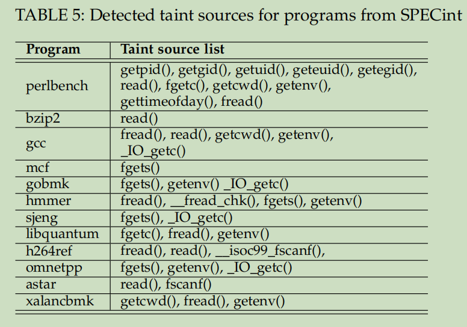
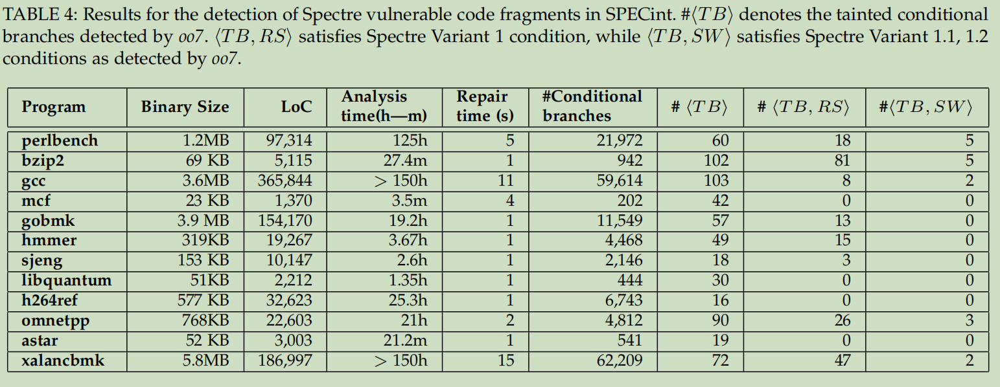
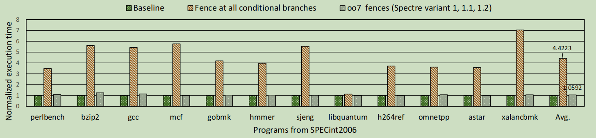
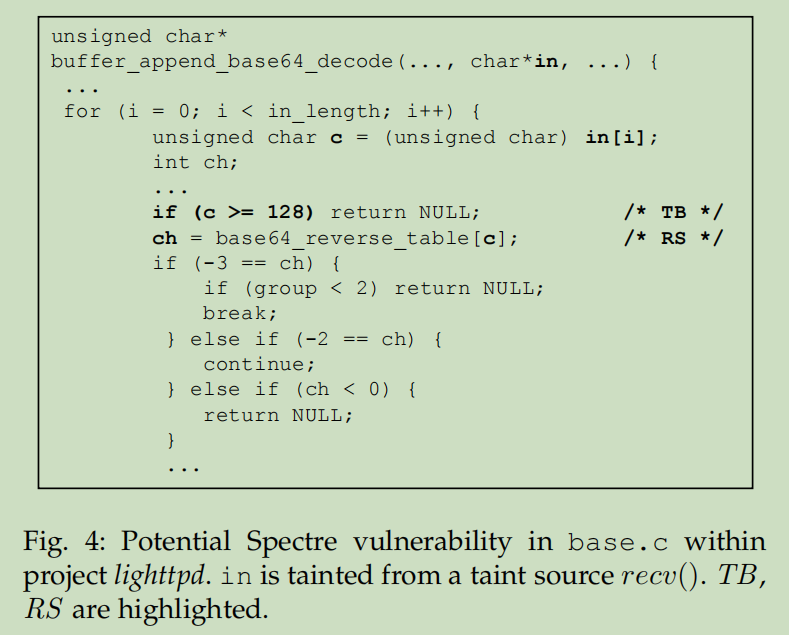
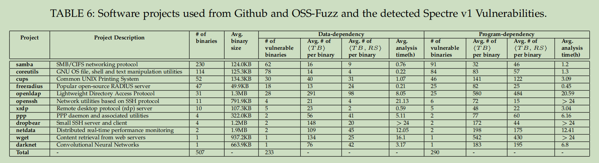

oo7: Low-overhead Defense against Spectre Attacks via Program Analysis
Table of Contents
1 Spectre 变种的分类
- 代码中的漏洞，存在类似的代码段。
- BTB或者RSB投毒，控制间接跳转地址，防御方式：Retpoline，RSB refilling。
- 暂时的乱序执行，攻击者执行恶意代码来读取内存中数据。
1.1 Spectre V1 及其变种
1.1.1 Spectre V1
定义：
- Tainted Branch(TB)：条件分支
- Read Secret(RS)：读取索引处数据
- Leak Secret(LS)：将数据作为索引读取内存数据。
void victim_function_v01(size_t x) { if (x < array1_size) { //TB: Tainted Branch y = array1[x]; //RS: Read Secret y temp &= array2[y * 256]; //LS: Leak Secret y } }
1.1.2 Spectre V1.1
Bounds Check Bypass Store
void victim_function_v1.1(size_t x, y) { if (x < array1_size) { //TB: Tainted Branch array1[x] = y; //SW: speculative Write } }
array1[x] 可以是返回地址，也可以SEH。
1.1.3 Spectre V1.2
类似V1.1，可以实现修改只读的内存区域，如代码指针。
1.1.4 Spectre-NG V4
在内存写入数据前，读取数据，会导致读取原数据。
1.2 Spectre V2 及其变种
1.2.1 Spectre V2
对BTB进行投毒，误导执行错误的间接跳转地址
1.2.2 SpectreRSB
对RSB进行投毒，误导返回地址
2 文章概述
oo7基于BAP开发。
- 从二进制程序生成控制流图较为困难
- oo7注重false negative
- 符号执行+污点分析
3 Spectre检测
3.1 V1
oo7将Spectre Execution Window设置为2n，为了确保false negative 使用污点分析来确认TB和内存访问。
3.2 污点分析
污点分析内容包括数据分析和控制流分析。
- 条件分支：将污点分支中的写入数据标记为污点。
- 计算
- 内存写入
- 内存读取
- Over-tainting
4 实现
- 强制执行：用于模拟预测执行
- 污点分析：
- 与强制执行共同作用
- 当发现call指令时，判断call的api是否是否可能从不可信的信道获取数据，如果API属于不可信，则将返回值标记为污点。
- 漏洞检测：在指令被标记为污点后，对指令进行检查，判断是否满足规则，同时判断是否在SEW范围内。
- 使用BAP进行分析。
- 直接对汇编代码进行修改，进行补丁。
5 测试
5.1 测试数据集
- Paul Kocher Spectre variations example
- SPECint
- Google OSS-Fuzz
- bzip2中插入漏洞代码
5.2 测试结果
设定的污点源： 



这个样本是否能被利用？

TB和RS之间的距离大多数在100条指令内
6 总结
oo7使用BAP作为二进制分析平台，使用静态污点分析对二进制文件进行分析。能够检测Spectre V1，V1.1,V1.2。
7 思考
- 与SpecTaint:Speculative Taint Analysis for Discovering Spectre Gadgets类似，将Spectre 漏洞代码注入到程序中进行测试，样例代码较为简单，容易被发现，是否会导致测试结果并不准确。